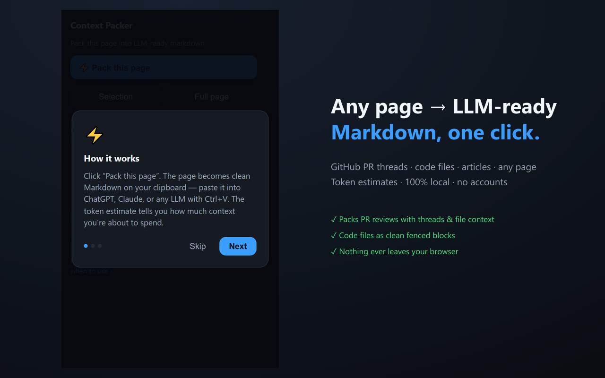

Stop fighting nav bars and broken formatting when you paste into ChatGPT or Claude. Pack GitHub PR threads, code files, and articles into clean, structured context — with a token estimate before you spend it.
⏳ In review — coming to the Chrome Web Store Submitted September 2026 · this page will link the listing the moment it's live
Title, state, description, the full conversation with authors and timestamps, review threads with file context, changed files. Works on private repos and GitHub Enterprise — it reads the page you're on, no tokens or API access.
Blob pages become one clean fenced code block headed by repo, path and branch. Docs and articles get Readability extraction — headings and links preserved, nav junk gone.
Pack a selection, or the raw full page as a fallback. Every pack carries a title/URL/date header and a token estimate, so you know what the context costs before you paste.
100% local, by design. No accounts, no servers, no analytics, no network requests. Pages are converted on your machine and land on your clipboard — nothing else, ever. Read the privacy policy.